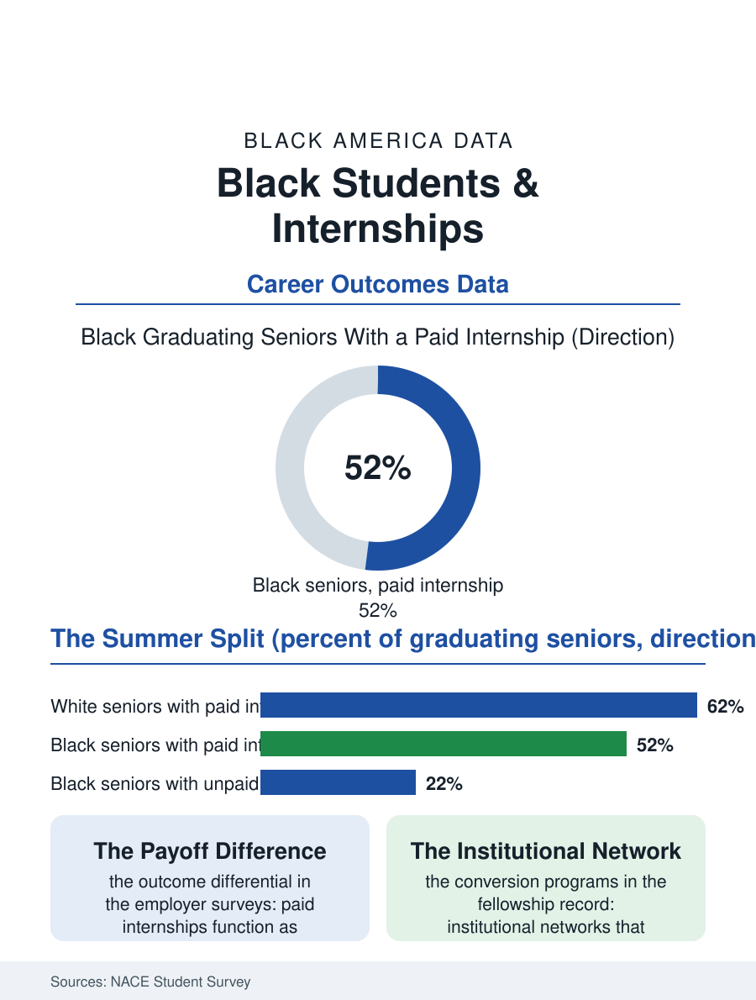

Black Education
The Summer That Prices the Career: Internships and Black Students
Paid internships are the first rung of the professional ladder, and Black students are underrepresented in paid seats and overexposed to unpaid ones. The internship file.

The internship is where the college file converts into the employment file, and it converts unequally. Paid internships in the student's field are among the strongest predictors of a job offer at graduation, and Black students hold them at lower rates than white students, while holding unpaid internships, the kind available mainly to students whose families can subsidize a summer, at rates that mirror the wealth data. This article reads the internship file.
Paid, Unpaid, and the Summer Ledger
The National Association of Colleges and Employers' annual student surveys supply the file's spine. Graduates who interned receive more offers and higher starting salaries than those who did not, and the premium concentrates in paid internships with employers, the positions that function as extended interviews. Unpaid internships show a much weaker payoff in the same surveys, sometimes no better than no internship at all, which converts the paid-unpaid split into the file's central variable. Black seniors report paid internships at rates several points below white seniors and unpaid ones at comparable or higher rates, a pattern the surveys let us price: the unpaid summer costs forgone wages from the summer job the student would otherwise hold, plus housing and transport in an expensive city, plus the senior-year consequence of arriving at recruiting season with the weaker credential. Family wealth closes the loop, because the subsidy that makes an unpaid summer possible is precisely what the wealth file says Black families hold least of, so the students with the most to gain from the credential are the most priced out of its unpaid version. Employers' recruiting geography adds a second filter: internship pipelines run through campus relationships concentrated at a short list of universities, and the HBCU campuses where Black talent concentrates receive a fraction of the on-campus recruiting attention relative to their graduate output.
The Pipeline Programs
The responses documented in the file are structural where they work. National fellowship programs built specifically to route Black students into paid placements, in media, technology, finance, law, and public service, operate on the conversion logic the data support: they replace the family network with an institutional one, prepare candidates for the interview formats the industries actually use, and, crucially, pay, either through the host or the fellowship, so the summer clears the student's ledger. Employers' own early-identification programs, sophomore internships and pre-internship academies, move the contest earlier, which cuts both ways in the data: students inside information networks hear about them in time, while the same programs quietly close to juniors who learned the calendar late. Colleges hold real levers and the record shows them being used: internship stipend funds that convert unpaid offers into paid ones for students on financial aid, transcript-credit arrangements, and career offices measured on placement equity rather than placement totals. The community college gap deserves its own sentence: internship participation among two-year students, a population heavily Black, is a fraction of the four-year rate, though the applied fields, health, logistics, and the trades, increasingly build paid work-based learning into the credential itself, the apprenticeship hybrid the workforce file keeps validating.
The First Rung Is the Ladder
The reason a summer job carries this much weight in the file is cumulative advantage. The paid internship produces the return offer or the reference that produces the next interview; the first employer's brand prices the second job's offer; and the network formed at twenty-one becomes the referral system of the next forty years, which is the same compounding the wealth file describes, denominated in careers instead of accounts. The internship gap is therefore one of the highest-leverage numbers in this atlas, a single summer standing at the joint between the education system Black students navigate successfully in rising numbers and the professional labor market whose senior ranks remain so unevenly shared. The forward indicators are visible in the annual surveys: the paid internship rate by race, the share of employers recruiting on HBCU campuses, and the stipend funds' growth. Each is a number an institution controls directly, which is the file's closing note. Unlike many of the gaps in these pages, the internship gap does not require solving wealth, housing, and history first. It requires employers to pay for the summer work they already benefit from, and to recruit where the students are. The data have made the request; the recruiting calendars will show who answered.
More in Black Education
Black Educational Attainment: High School Parity, the College Gap
About 89 percent of Black adults hold a high school diploma and one in four holds a bachelor's degree or higher — the attainment ladder, the college completion gap, and the generational trend.
Historically Black Colleges and Universities: Enrollment and Degrees
More than 100 HBCUs enroll roughly 290,000 students and award about one in six Black bachelor's degrees — an outsized share from a small sector. The federal education data.
Black College Enrollment: 2.4 Million Students
About 2.4 million Black students are enrolled in American colleges — nearly two-thirds of them women. The NCES enrollment data by sector, level, and trend.
Source: National Association of Colleges and Employers, annual Student Survey and internship reports; work-based learning research.